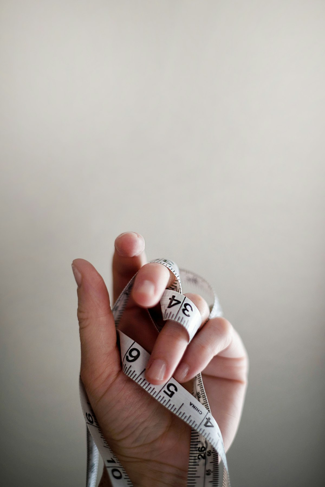

Volunteer powered
From pricing rare editions to welcoming guests, our volunteers bring warmth and expertise to every shift.
We are a volunteer-powered bookstore raising funds for the DeMary Memorial Library through the sale of new, used, and collectible books. Stop by Rupert, Idaho to explore the stacks, chat with our team, and support community literacy.
"To some it's a secondhand bookshop. To me it's an orphanage of unwanted books waiting for a loving home."
Our all-volunteer crew keeps shelves stocked, stories circulating, and library programs thriving.
Friends of the DeMary Memorial Library, Inc. formed in April 2002 as a non-profit dedicated to advocating for library programs and funding enhancements the budget can't cover. Book Central is how we sustain that mission.
"TEAM — Together Everyone Achieves More."
The shelves you browse, the events you enjoy, and the programs at the library are made possible by neighbors volunteering alongside neighbors.
Recruit members, raise funds, and celebrate stories—especially when budgets fall short. We listen closely to the DeMary Memorial Library to understand its needs, then mobilize the community to deliver.
Stop in during regular shop hours or meet us at a Friends meeting to offer ideas.
11 AM - 3 PM
10 AM - 3 PM
11 AM - 3 PM
11 AM - 3 PM
First Saturday Bag Sale · 9 AM - 3 PM
From pricing rare editions to welcoming guests, our volunteers bring warmth and expertise to every shift.
We collaborate closely with the library director, board, and civic partners to meet local needs.
Book Central is a separate entity, yet every decision is made with the library's wish list in mind.
Book Central offers everything from bargain paperbacks to rare treasures. Every purchase fuels improvements at the DeMary Memorial Library.
Discover gently used favorites, current bestsellers, and brand-new titles starting at just $0.25 for paperbacks and $0.50 for hardcovers.
Looking for something special? Our antique and collectible selection features out-of-print gems curated by volunteers.
Every purchase supports summer reading, technology upgrades, and other wish-list items the library budget can't cover.
Look for pop-up sales, Chamber of Commerce events, and seasonal drives powered by our volunteer team.
From technology upgrades to children's spaces, your purchases directly shape the DeMary Memorial Library. Here are just a few highlights.
Bright, cozy gathering space designed for discovery and storytime.
Improved accessibility for all patrons entering the library.
Kid-sized tech tools and reading nooks to spark curiosity.
Modern resources for preserving history and enjoying the space in comfort.
The DeMary Memorial Library is working to change from a city library to a county library. Districting would let it serve—and be supported by—residents across all of Minidoka County, not just Rupert.
To get this measure on the ballot, organizers need to collect signatures from registered voters throughout Minidoka County. Stop by Book Central to sign the petition, or ask a volunteer how you can help gather signatures in your neighborhood.
The library plays a vital role in children's literacy. Joining the Friends amplifies those efforts with funding, events, and mentorship.
Whether you have a couple of hours each week or month, your talents can help shelve books, assist customers, or tell the Friends' story.
Become a FriendEvery donation—time, talent, or treasure—fuels literacy programs, technology upgrades, and joyful reading experiences throughout the Mini-Cassia area.
"The volunteers are very friendly, the prices are unbeatable, and our selection is awesome!"
Join the crew that makes this magic possible.
Annual membership is $25 and helps cover store upkeep plus summer reading programs.
Shop at Ridley's and sign your rewards over to Friends of the DeMary Library, Inc. (renew annually).
Members who volunteer in the store have their annual $25 membership fee waived—ask a volunteer coordinator how to get started.
Whether you have a few hours a month or a week, we'd love your help shelving, curating, and planning events.
Tell us about your interests, availability, and any special talents. We'll match you with volunteer roles or committees that need you most.
Contact the team11 AM - 3 PM
10 AM - 3 PM
11 AM - 3 PM
11 AM - 3 PM
Every first Saturday · 9 AM - 3 PM · Fill a bag with books for just $3.
Drop us a note, give us a call, or stop by the shop. We'll help you find the perfect read or the best way to support the library.
Mon 11-3 · Wed 10-3 · Fri 11-3 · Sat 11-3
Bag Sale · First Saturday · 9-3
Sneak peeks of new arrivals, volunteer spotlights, and monthly wish lists land on social first.
Located 3½ blocks from the DeMary Memorial Library in downtown Rupert.
A glimpse at the cozy corners, curated displays, and much-loved titles you'll discover when you visit.


Photos